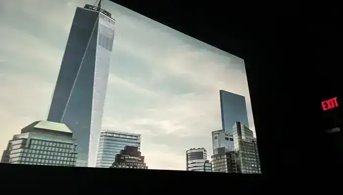
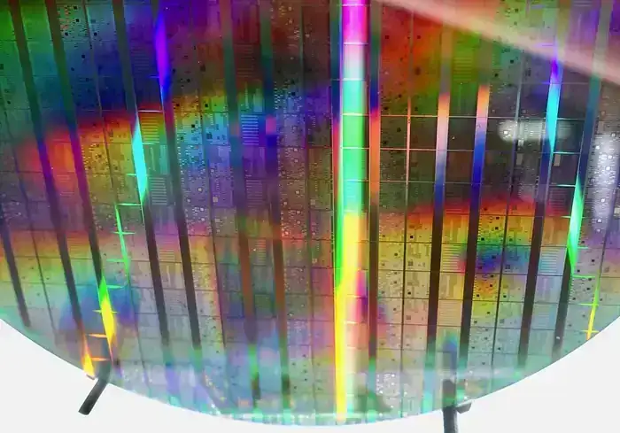
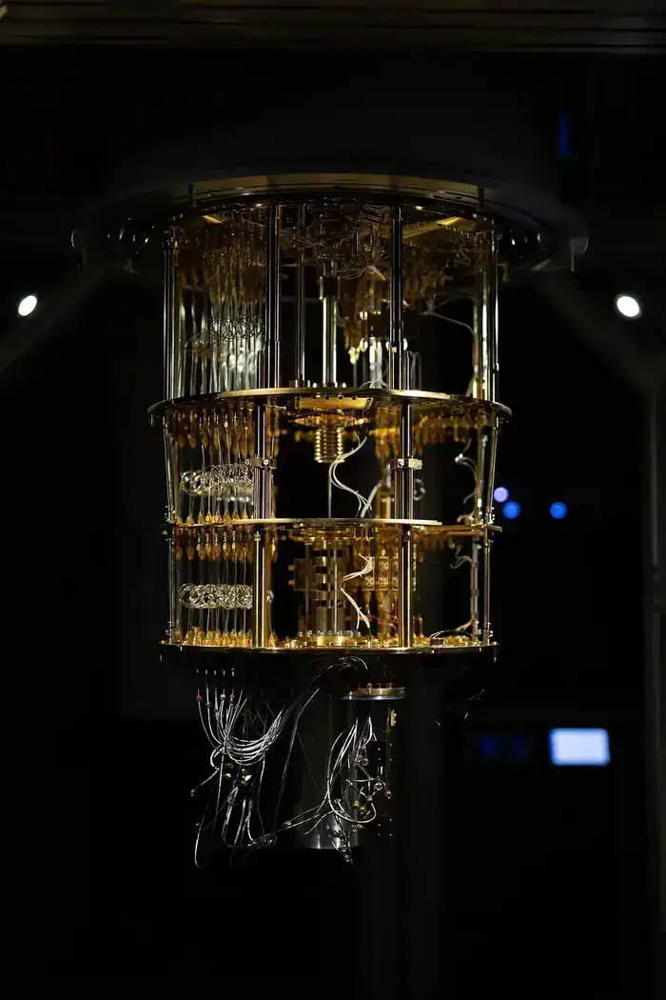

The claim
Public-key cryptography protects data in transit and at rest using problems — factoring, discrete logarithms — that a sufficiently large quantum computer could solve with Shor's algorithm. Traffic recorded today could be stored and decrypted later, which makes the threat relevant now for anything with a long confidentiality life.
Maps, diagrams and images






The claim is not speculative in the institutional sense: the US National Security Agency and other agencies have published guidance on it, and standards bodies have been running a post-quantum cryptography process for years.
What is being done
NIST selected the first post-quantum algorithms in 2022 and published standards in 2024, and migration has begun in browsers and libraries. The engineering problem is the usual one: a long tail of systems, and a decade-long replacement cycle.
The uncertainty is the timeline. No one knows when, or whether, a cryptographically relevant quantum computer will exist; the migration is justified by the asymmetry — the cost of being early is low, and the cost of being late is total.
Documented: the vulnerability of current public-key systems to Shor's algorithm.
Documented: agency guidance, and the NIST standards process.
Documented: migration is under way.
Unknown: the timeline to a cryptographically relevant machine.
The honest label: documented — a real vulnerability with a real migration, and an unknowable date.
Why it is in the archive
Because it is the archive's best case of a claim that is true, actionable and dated in the future — and because the response to it is one of the few places where governments and industry agree without argument.
Open resources on this topic
- PapersOpen-access articles: DOAJ · PubMed Central · Internet Archive Scholar
- BooksPublic-domain and borrowable copies: Open Library · Project Gutenberg · Google Books · Internet Archive
Cite this page
Momin, S. (2026). Harvest Now, Decrypt Later. The Larger World Archive. https://drsamonline.github.io/LARGE_GLOBE/harvest-now-decrypt-later.htmlMomin, Sohil. “Harvest Now, Decrypt Later.” The Larger World Archive, 2026, https://drsamonline.github.io/LARGE_GLOBE/harvest-now-decrypt-later.html.Momin, Sohil. “Harvest Now, Decrypt Later.” The Larger World Archive, 2026. https://drsamonline.github.io/LARGE_GLOBE/harvest-now-decrypt-later.html.@misc{harvest2026harvest,
author = {Momin, Sohil},
title = {Harvest Now, Decrypt Later},
year = {2026},
howpublished = {The Larger World Archive},
url = {https://drsamonline.github.io/LARGE_GLOBE/harvest-now-decrypt-later.html},
note = {Last reviewed 20 November 2026}
}Last reviewed 20 November 2026 · Corrections policy · this page is not peer reviewed
Sources for this page
- Wikipedia, “Post-quantum cryptography” — the migration and the standardsen.wikipedia.org
- Wikipedia, “Shor's algorithm” — the threaten.wikipedia.org
- Wikipedia, “Public-key cryptography” — what is at risken.wikipedia.org
- Wikipedia, “Harvest now, decrypt later” — the attack patternen.wikipedia.org